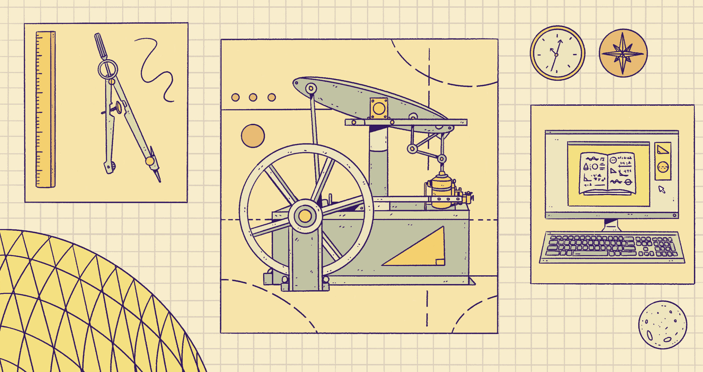

O primjenjivosti matematike na fizički svijet

Od aritmetike pa sve do kompliciranijih matematičkih računa koji se danas izvode i primjenjuju u prirodnim i tehničkim znanostima, proizašlo je pitanje: zašto i kako matematika tako dobro opisuje materijalni svijet?
Još od 1687. godine i objave Newtonovog kapitalnog djela "Philosophiae Naturalis Principia Mathematica", počinje se sve češće postavljati pitanje nerazumne učinkovitosti1 matematike pri opisivanju i predviđanju fizikalnih pojava. Neki fizičari će ići toliko daleko da tvrde da je cijeli Svemir sam po sebi matematički objekt2.
Ovdje nećemo ulaziti u detalje matematičkih konstrukcija nužnih za opisivanje različitih fizikalnih pojava. Cilj je razmotriti3 na kojoj razini matematika može biti djelotvorna i kako je uopće konceptualno moguće primijeniti jednostavnu aritmetiku na svijet fizičkih objekata.
Primjer
Uzmimo jabuku4. Jedna specifična jabuka je partikularna, individualna instanca šire kategorije jabuka. Pitanje je: možemo li aritmetičke operacije primijeniti izravno na pojedinačne fizičke predstavnike neke kategorije?
Pokazat će se da ne možemo. Barem ne bez gubitka njihove partikularnosti.
Radi jednostavnosti, poistovjetimo našu jabuku sa brojem 1, i pogledajmo do kakvih problema to može dovesti.
Kao temeljni aksiom ove rasprave uzmimo zakon identiteta:
$$ 1=1 $$
Zakon identita tvrdi da je svaki objekt jednak samome sebi.
Oduzimanje: Ako tu specifičnu jabuku oduzmemo od nje same, rezultat je očekivan:
$$ 1-1=0 $$
Intuitivno: oduzimam tu istu jabuku i ostajem bez ijedne.
Zbrajanje: Međutim, možemo li ikako dodati tu specifičnu jabuku samu sebi?
Fizički ne možemo. Ne postoji operacija koja bi mi dala dvije identične jabuke. Ako imam samo tu jednu jabuku, njezinim „dodavanjem samoj sebi“ ne dobivam ništa novo. Ostaje mi samo ta jedna, što dovodi do kontradikcije:
$$ 1+1 = 1 $$
Drugim rječima, zbrajanje ima smisla tek ako govorimo o dvjema različitim jabukama, a ne o jednoj specifičnoj.
Aritmetika se ne može koherentno formulirati nad pojedinačnim fizičkim objektima.
Stoga je dječja "imaš tri slatkiša, izgubiš dva, kupiš još četiri" - formulacija aritmetike djelotvorna onda kada pod rječju slatkiš nemamo na umu "baš taj" nego instancijaciju kategorije Slatkiš.
Zašto je ovo važno?
Matematika se ne bavi partikularnostima: ona se bavi strukturama, kategorijama i kvantitetama.
Isto tako, u potrazi za "najdubljim slojem" svemirske lukovice5, fizika ne govori o pojedinačnim objektima, nego isključivo o matematičkim strukturama. Čestice nisu nikakve specifične "male kuglice", nego rigorozno definirani paketi matematičkih svojstava.
Sve se to skupa čini jako daleko od makroskopskog svijeta koji nam se prikazuje pun jedinstvenosti i određenosti.
Je li temeljna realnost sačinjena od apstraktnih struktura ili konkretnih pojavnosti?
Ispada da su i matematičke strukture i raznolikost makroskopskog svijeta različiti aspekti jedne te iste realnosti, uhvaćeni na različitim razinama opisa.
Izvor naslovne slike: worksinprogress.co
{kind=link}
-
E. Wigner: "The Unreasonable Effectiveness of Mathematics in the Natural Sciences", (1960). Dostupno ovdje. ↩
-
M. Tegmark: "Mathematical Universe Hypothesis". ↩
-
Primjetit ćete kako su u većini slučajeva, u filozofskim raspravama, "nasumično" odabrani predmeti mahom: jabuka, boca ili stolica. ↩
-
F. Close: "Svemirska lukovica: kvarkovi i priroda svemira", (1997). ↩